现代深度学习负载（推荐模型、大模型）的计算图越来越复杂，同时包含计算密集算子（GEMM）与内存密集子图（elementwise、reduction）。但主流DL编译器通常把这两类分开优化，形成僵硬的融合边界，限制跨算子优化与片上数据复用。
ComFuse抓住一个机会：下游内存密集操作可以和计算密集算子并发执行，被完全藏到计算背后。它把这个机会自动化，生成融合内核处理「计算密集算子 + 依赖丰富、内存密集的elementwise-reduction子图」，还支持背靠背GEMM（B2BGEMM）融合：在多种负载上持续优于TorchInductor，最高1.24x。
传统编译器面向GEMM用Tensor Core深度优化，面向elementwise/reduction则走另一套图优化与内核生成：两类算子在编译层被割裂，每个kernel都让中间值进出一次全局内存，丢失跨算子重用机会。
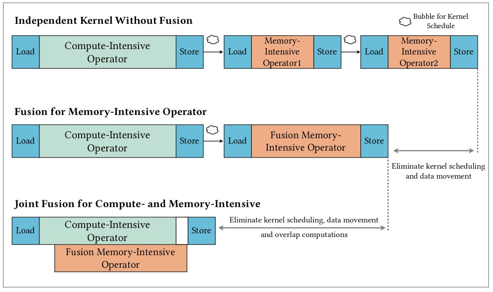
现代GPU（如Hopper/Blackwell）支持跨CTA的空间数据共享：中间值能在片上跨CTA边界交换，不需要落回全局内存。这为「计算-内存联合融合」打开了新可能，尤其是下游elementwise/reduction要消费跨多个tile的MatMul输出时。
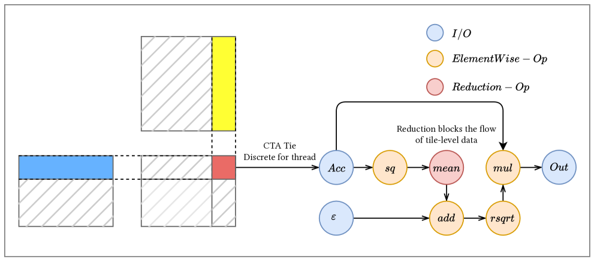
自动利用这种并发与共享，会引出新的编译难题：怎么切分、怎么调度、怎么处理跨tile的reduction同步边界：这是ComFuse要解决的。
ComFuse的骨干是一个Stage-Stream执行模型：把MatMul算作一个阶段（stage），把下游的内存密集子图（elementwise + reduction）算作另一个阶段，用流水调度（pipeline schedule）协调reduction执行与MatMul。
关键点在于图内计算（Intra-DAG）与图间链接（Inter-DAG chaining）的分工：每个阶段内部按DAG调度，阶段之间通过可复用的片上缓冲衔接，从而让内存密集阶段的执行被上一阶段的计算遮住（hidden）。
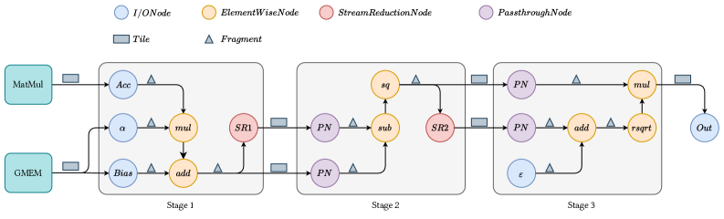
针对跨tile的Reduction同步，ComFuse采用三级reduction方案：由于epilogue的reduction只沿一个逻辑维度聚合，同步边界被限制在tile的一个局部子集，而不是整张张量：这让并发成为可能，而不需要等全局同步。
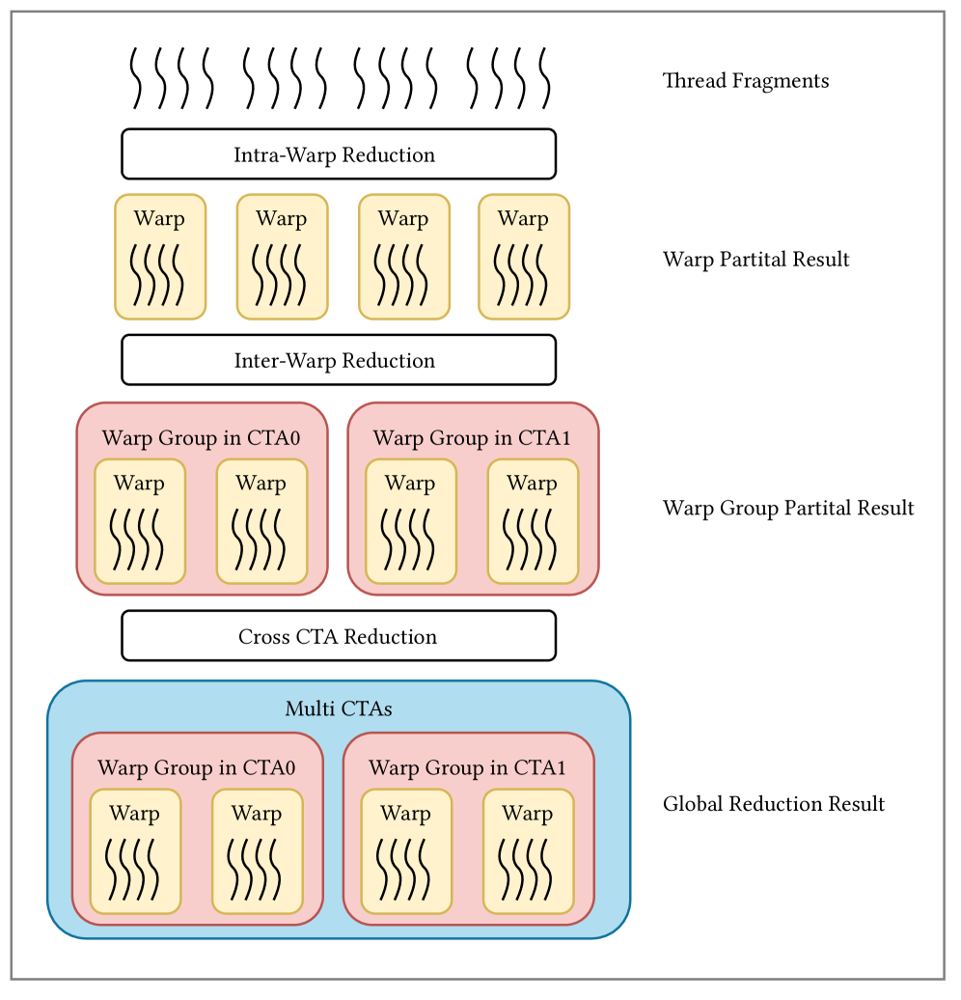
ComFuse进一步支持B2BGEMM（back-to-back GEMM） 融合，把两个连续GEMM的compute-memory交互也纳入一致性调度，扩展了它可以覆盖的复杂模式。
实现上分数据流调度（Dataflow Scheduling）、生产者warp组（Producer Warp Group）和消费者warp组（Consumer Warp Group）：生产者把第一个GEMM的tile交给消费者时，内存密集/第二GEMM重叠进行，避免中间落回全局内存。
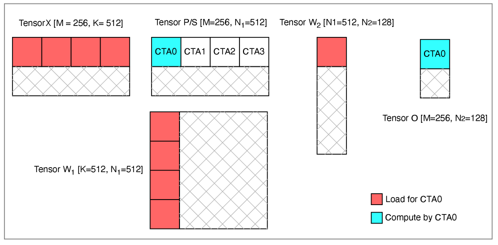
这使ComFuse不止处理「MatMul + epilogue」，还能处理更一般的计算-内存交替模式，适用面更广。
ComFuse是一套自动化编译系统：把高层tensor子程序自动降级（lower）为优化过的融合内核，减少手工内核工程。
编译栈分几步：代码翻译（Code Translate） →前端映射（Frontend Mapping） →reduction子图切分（Reduction Subgraph Splitting） →后端映射（Backend Mapping）。
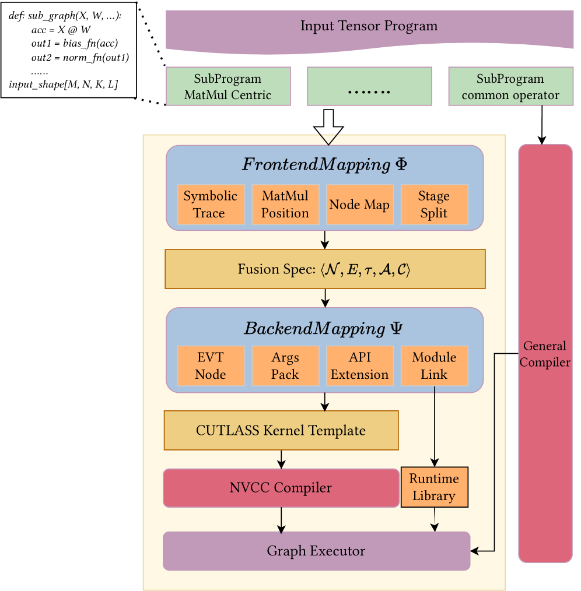
前端负责识别可融合的计算-内存结构并建模数据流；子图切分把复杂的reduction依赖拆成适合流水并发的形式；后端把调度方案映射到具体CUDA/CUTLASS结构上。用户给出高层算子即可，无需手写融合内核。
在post-norm及多种复杂计算场景下，ComFuse生成的融合内核全面优于TorchInductor：在所有评估工作负载上持续胜出，最高1.24x加速。
三种代表性pattern下，ComFuse的平均加速分别为1.08x、1.09x、1.07x：速度提升稳定的同时，还能表达TorchInductor不支持的更灵活融合模式。
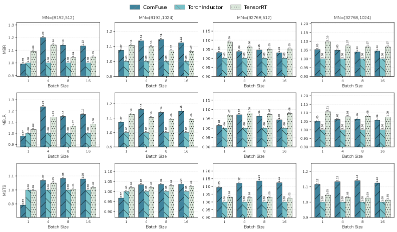
论文还评估了Self-Attention、Target-Attention、DLRM Bottom MLP等端到端场景，证明融合收益不只在孤立microbenchmark，也落到真实模型结构中。
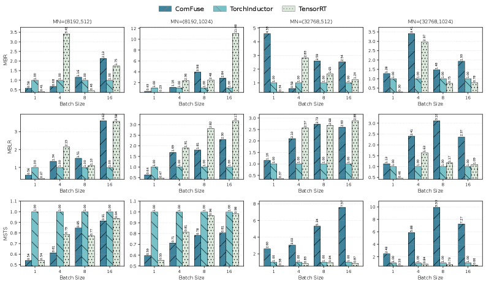
在Self-Attention、Target-Attention与DLRM Bottom MLP上，ComFuse都展示了超越TorchInductor的融合性能：说明它不只针对单一模板，而是能吃到多种「计算-内存」交互结构。
这套方法的收益本质来自两点：把内存密集执行藏进GEMM计算，以及用跨CTA的片上数据共享省掉全局内存往返。这也正是现代GPU架构上融合编译器该走的两个方向。
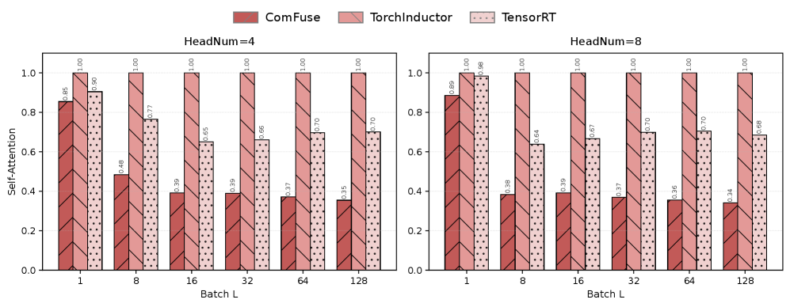
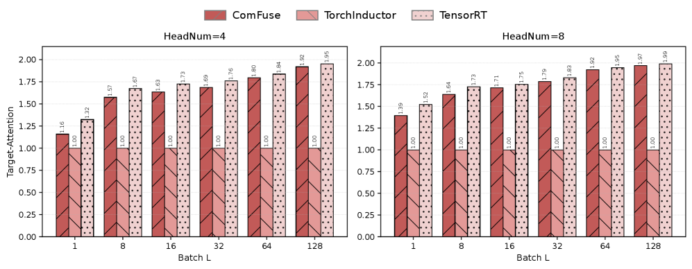
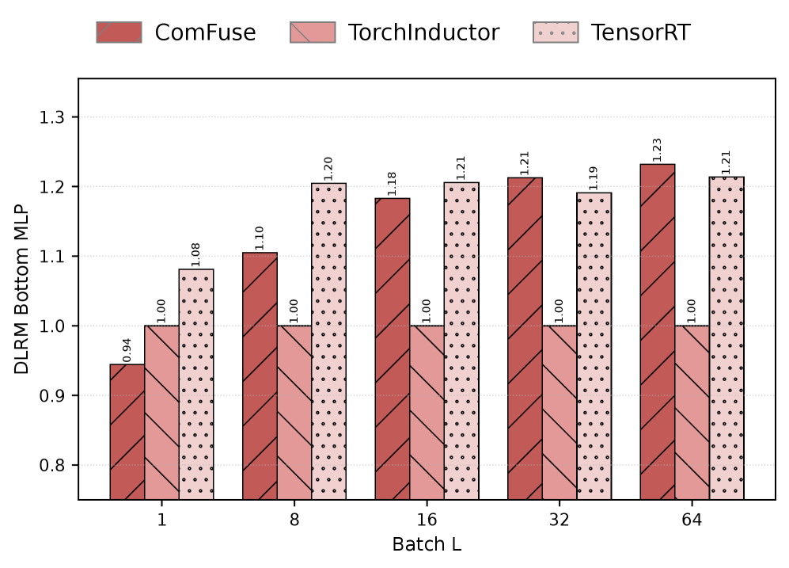
ComFuse证明：编译器不该把计算密集和内存密集算子当作两套毫不相干的世界。利用现代GPU的跨CTA片上共享 + 流水调度，内存密集子图可以被完全藏到GEMM背后，融合收益既真实又可自动获得。
对跑大模型post-norm、推荐模型DLRM、attention这类「GEMM后面拖着一长串elementwise/reduction」的团队，把这类模式交给这种自动融合编译，比手写CUTLASS epilogue更省力、也更灵活。
参考：https://arxiv.org/abs/2608.03537v1